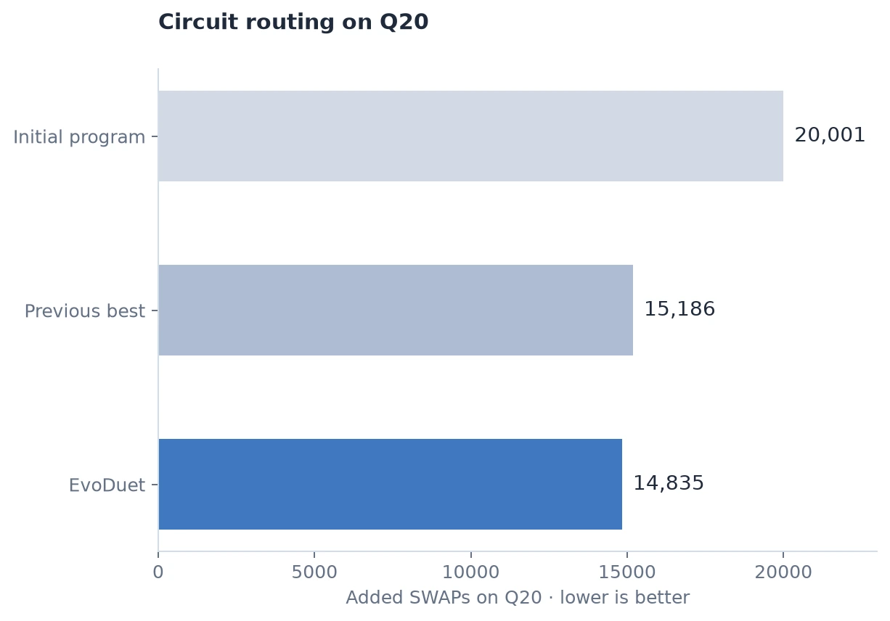
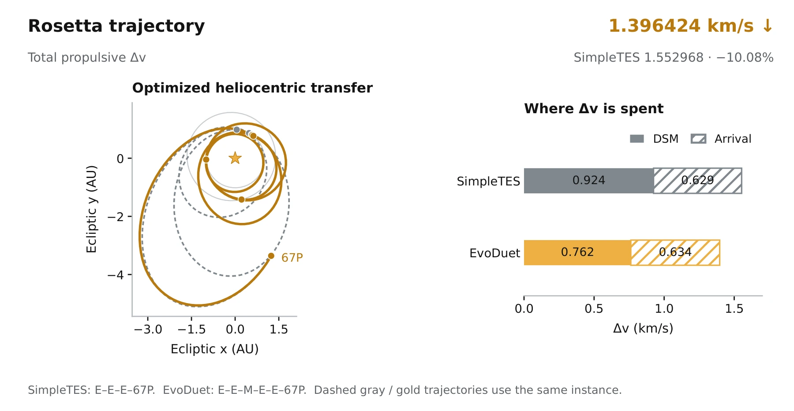
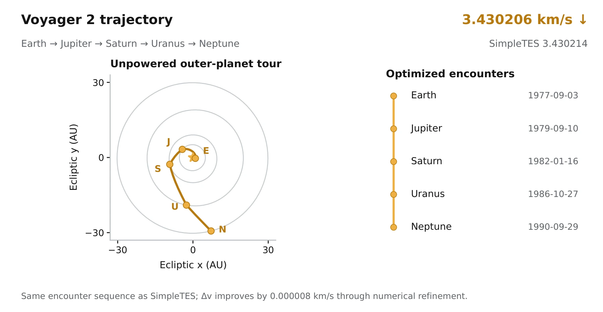
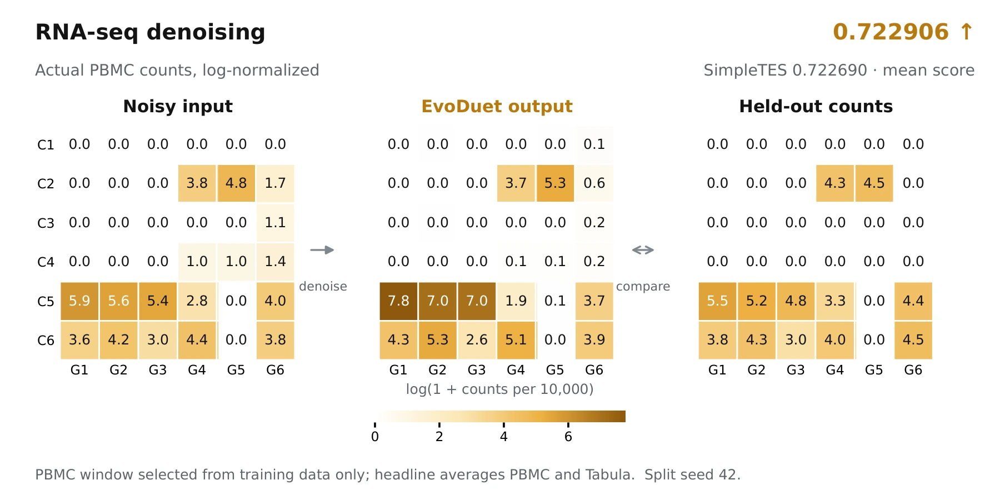
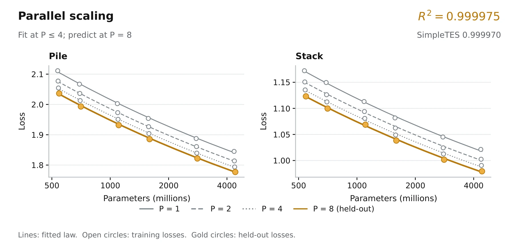
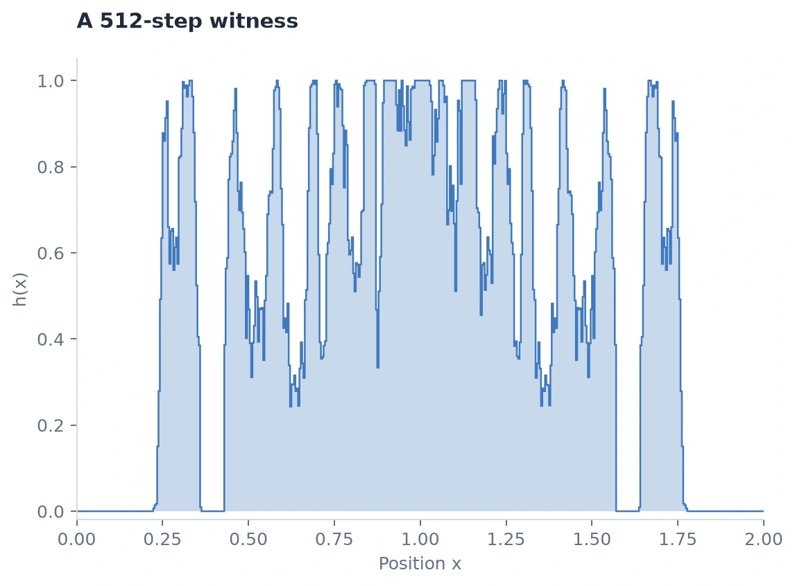
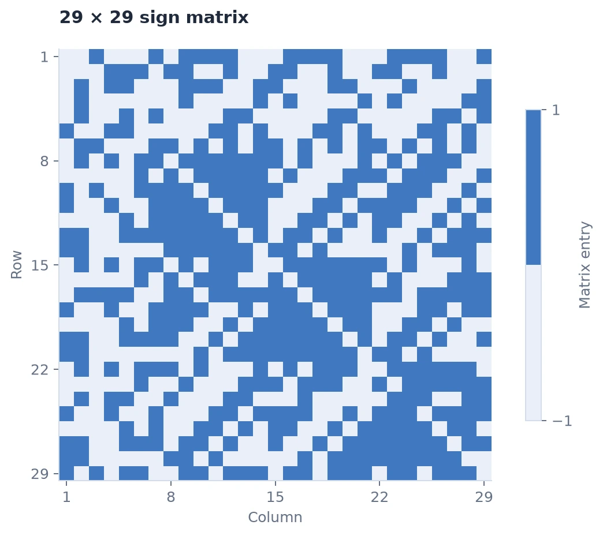
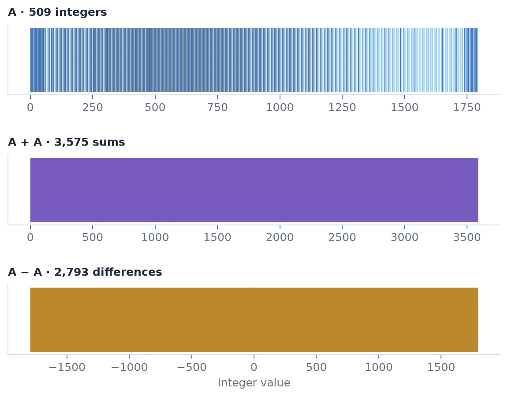
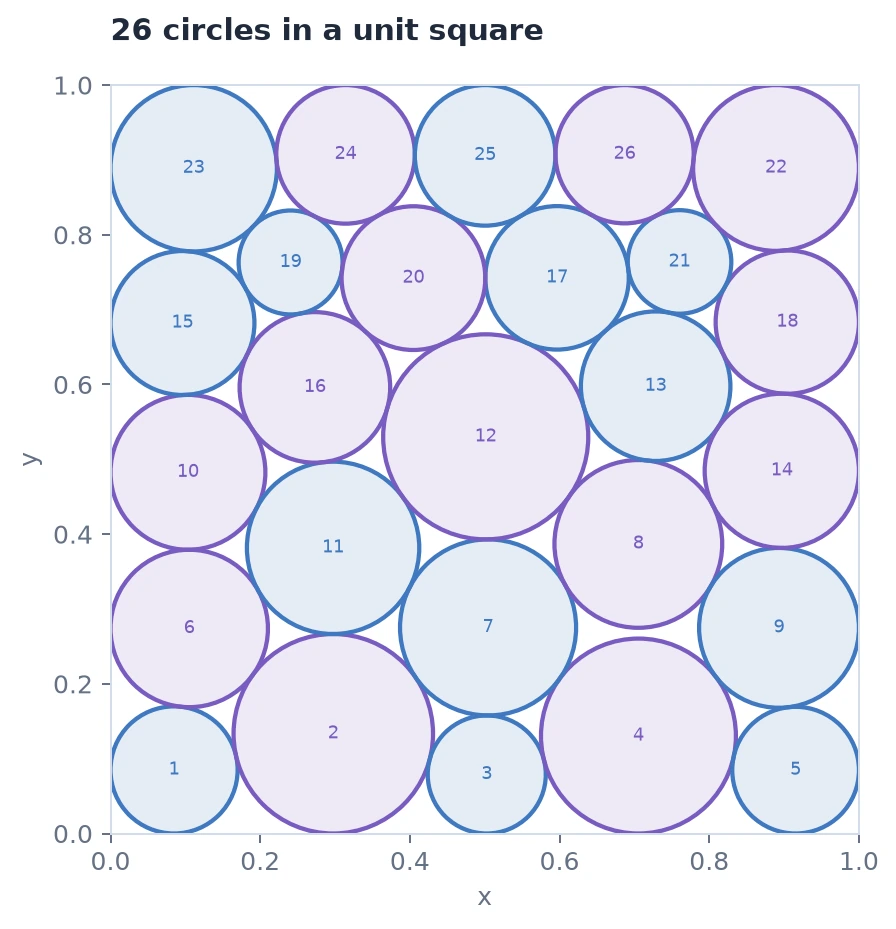
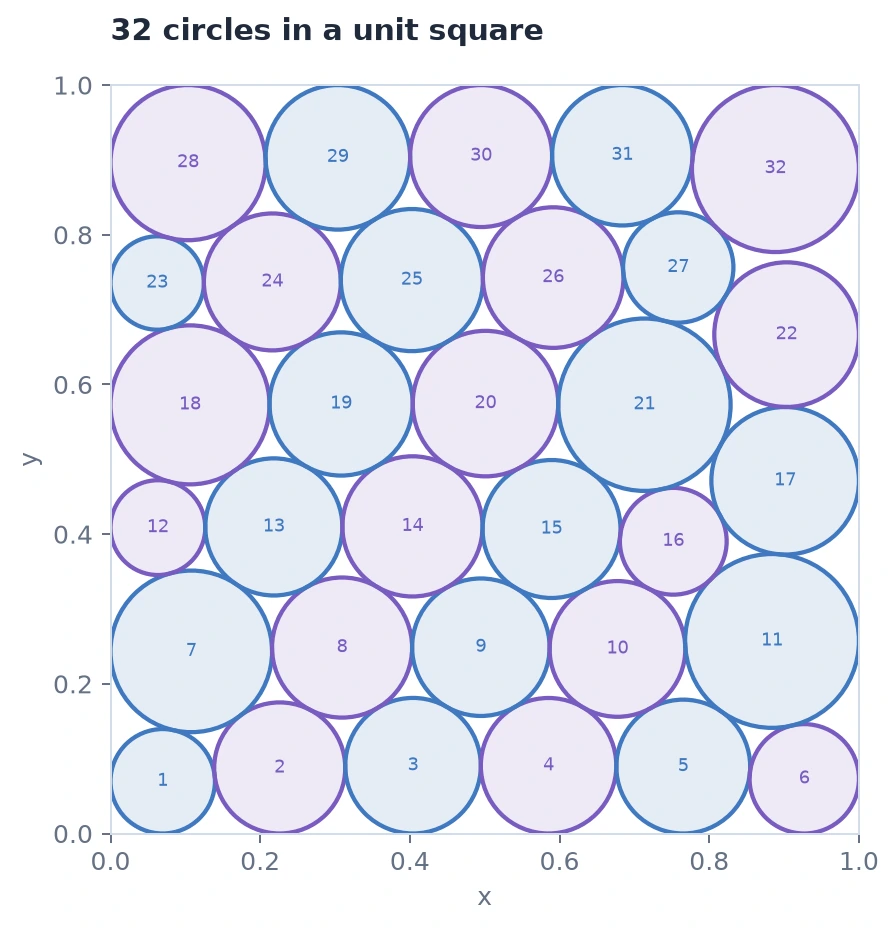

11 best programs

Swap Reduction
Improved15,18614,835SWAPs

Rosetta
Improved1.5529681.396424km/s

Voyager 2
Improved3.4302143.430206km/s

Denoising
Improved0.7226900.722906

Domain mixture scaling
Improved0.9969220.997062

Parallel scaling
Improved0.9999700.999975

Erdős minimum overlap
Improved0.3808680.380859

Hadamard
Matched0.9356730.935673

Sums/Diffs
Improved1.1448871.144999

Circle packing · 26
Matched2.6359832.635983

Circle packing · 32
Matched2.9395732.939573
No matching tasks.